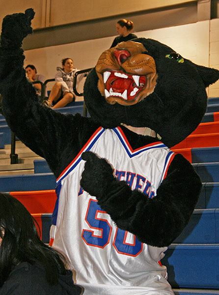

City in New York that starts with my last name: Palatine
University in Palatine: Purchase College
Mascot of Purchase College:
Panther
Fun Facts about the Mascot
Been around PC since the late 1960s, but my role really
took off during the 1980s when we changed our school
colors to Orange and Blue to look more like the NY Knicks,
who were sharing the facility with us. The Panther name,
backed by the Orange and Blue, provided a rebirth of sorts for athletics.
Around 2006, the campus gave me my name, Perseus, honoring the Greek mythology figure of the same name.
- Represents 16 teams
- Favorite Book: Lion King
- Loves to: high-fiving everyone

index_page